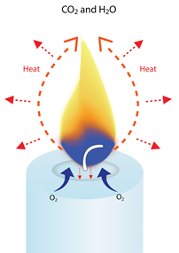
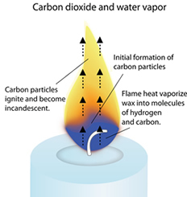
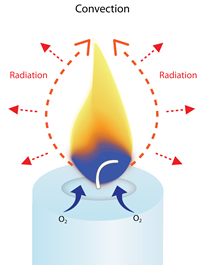

How Candles Burn
All waxes are essentially hydrocarbons, which means they are largely composed of hydrogen (H) and carbon (C) atoms. When you light a candle, the heat of the flame melts the wax near the wick. This liquid wax is then drawn up the wick by capillary action. The heat of the flame vaporizes the liquid wax (turns it into a hot gas), and starts to break down the hydrocarbons into molecules of hydrogen and carbon. These vaporized molecules are drawn up into the flame, where they react with oxygen from the air to create heat, light, water vapor (H2O) and carbon dioxide (CO2). Approximately one-fourth of the energy created by a candle’s combustion is given off as heat radiates from the flame in all directions. Enough heat is created to radiate back and melt more wax to keep the combustion process going until the fuel is used up or the heat is eliminated. It takes a few minutes when you first light a candle for this combustion process to stabilize. The flame may flicker or smoke a bit at first, but once the process is stabilized, the flame will burn cleanly and steadily in a quiet teardrop shape, giving off carbon dioxide and water vapor. A quietly burning candle flame is a very efficient combustion machine. But if the flame gets too little or too much air or fuel, it can flicker or flare and unburned carbon particles (soot) will escape from the flame before they can fully combust. The wisp of smoke you sometimes see when a candle flickers is actually caused by unburned soot particles that have escaped from the flame due to incomplete combustion.
The Colors of a Candle Flame
If you look closely at a candle flame, you’ll see a blue area at the base of the flame. Above that is a small dark orange-brown section, and above that is the large yellow region that we associate with candle flames. The oxygen-rich blue zone is where the hydrocarbon molecules vaporize and start to break apart into hydrogen and carbon atoms. The hydrogen is the first to separate here and reacts with the oxygen to form water vapor. Some of the carbon burns here to form carbon dioxide. The dark or orange/brown region has relatively little oxygen. This is where the various forms of carbon continue to break down and small, hardened carbon particles start to form. As they rise, along with the water vapor and carbon dioxide created in the blue zone, they are heated to approximately 1000 degrees Centigrade. At the bottom of the yellow zone, the formation of the carbon (soot) particles increases. As they rise, they continue to heat until they ignite to incandescence and emit the full spectrum of visible light. Because the yellow portion of the spectrum is the most dominant when the carbon ignites, the human eye perceives the flame as yellowish. When the soot particles oxidate near the top of the flame’s yellow region, the temperature is approximately 1200o C. The fourth zone of the candle (sometimes call the veil) is the faint outside blue edge that extends from the blue zone at the base of the flame and up the sides of the flame cone. It is blue because it directly meets with the oxygen of the air, and is the hottest part of the flame, typically reaching 1400o C (2552o F).
Why a Candle Flame Always Points Up
When a candle burns, the flame heats the nearby air and starts to rise. As this warm air moves up, cooler air and oxygen rush in at the bottom of the flame to replace it. When that cooler air is heated, it too rises up and is replaced by cooler air at the base of the flame. This creates a continual cycle of upward moving air around the flame (a convection current), which gives the flame its elongated or teardrop shape. Because “up” and “down” are a function of the earth’s gravity, scientists wondered what a candle flame would look like in outer space, where the pull of gravity is minimal and there really isn’t an up or down. In the late 1990s, NASA scientists ran several space shuttle experiments to see how candle flames behaved in microgravity. As you can see from the NASA photos below, a candle flame in the microgravity is spherical instead of its elongated shape on Earth. Without gravity, there’s no “up” direction for warm air to rise and create a convection current.
Further Reading
For more information about candle research studies and project ideas, click the links below: